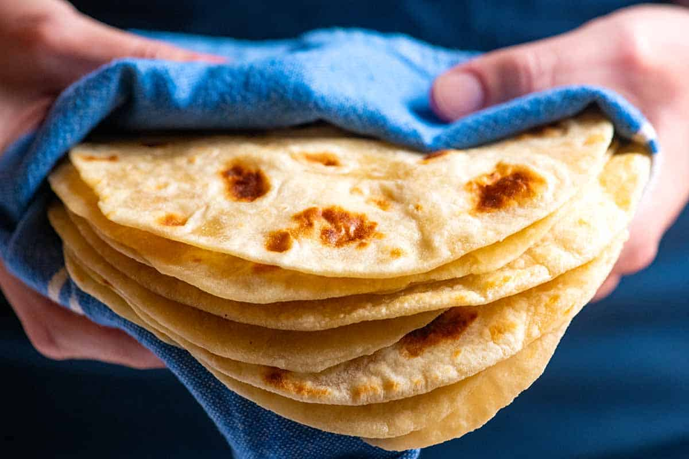

HOME
HOMEMADE TORTILLAS

Making your own tortillas at home elevates any wrap or burrito from "good" to "restaurant-quality." Freshly made flour tortillas are incredibly soft, pillowy, and surprisingly easy to make with just a few basic pantry staples.
Here is what goes into making the perfect homemade flour tortillas:
Ingredients
- 550g flour
- 100ml vegetable oil
- 250ml warm water
- salt to the taste
- 5ml baking powder
Preparation
- mix all the dry ingredients on a large bowl
- slowly throw in the fat while mixing
- slowly throw in the warm water (not hot)
- mix until it uniforms
- knead the dough for about 5 minutes
Rest
- let the dough rest in room temperature for 15-20 minutes
!DO NOT SKIP THE RESTING PROCESS!
cutting
- cut the dough in 10 equal pieces
- roll the pieces into balls
- now open the dough with the help of a roller
Cook
- heat a frying pan
- throw the dough in the pan
- wait until the dough starts to bubble then flip it to the other side
- 30-40 seconds each side
now enjoy! if you want, you can check the recipe for a delicious Big Mac Burritos